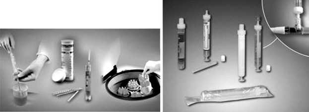
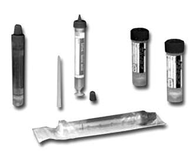
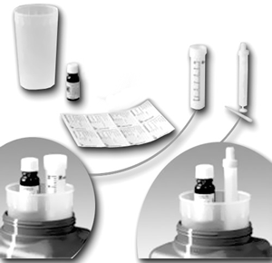
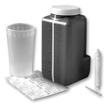
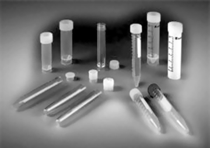
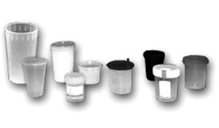

Monovette® ORINA
Sistemas de recolección de orina
DESCRIPCIÓN:
Recipientes de muestra y recolección higiénica para los requisitos de un moderno análisis de orina.
La MONOVETTE® Orina con o sin estabilizador combina la recolección de orina higiénica con una alta practicidad.
Nuestra gama incluye recipientes individuales de recolección, kits completos para orina de 24 horas y recipientes de orina de diferentes medidas y opciones.
Para completar esta línea de productos, ofrecemos una amplia selección de diferentes tubos de orina cónicos y recipientes de orina fabricados en diferentes materiales con tapón a rosca o presión.

CARACTERÍSTICAS:
Procesamiento higiénico y versátil
La MONOVETTE® Orina combina diferentes funciones en un solo producto:
• Recolección higiénica.
• Recipiente de transporte robusto.
• Diseño optimizado para test de tira.
• Tubo de centrífuga para recuperación de sedimento.
• Adaptable a instrumentos.
PRESENTACIÓN:
La MONOVETTE® Orina graduada con tapón y punta de aspiración está disponible en una gran variedad de medidas y volúmenes, estéril individual, con o sin etiqueta.
Recomendamos la MONOVETTE® Orina opaca para la determinación de parámetros sensible a la luz UV.
La MONOVETTE® Orina estéril individual con el adaptador Luer lock permite una extracción higiénica y segura de la muestra directamente desde catéter Foley, eliminando cualquier necesidad de aguja, y excluyendo el riesgo que ello supone o la transferencia de muestras.

Diagnósticos microbiológicos de orina
La MONOVETTE® Orina y el recipiente de 25 ml con tapón a rosca preparados con ácido bórico están aprobados para estabilizar el número de gérmenes hasta 48 horas (a temperatura ambiente) entre la recolección y el análisis. La multiplicación de gérmenes se evita de forma segura y se garantiza un número de bacterias estable.
Para obtener una concentración óptima del ácido bórico (1.5%) es importante respetar el volumen nominal.
Después de la recolección de orina, el recipiente con estabilizador debe mezclarse cuidadosamente.
La MONOVETTE® Orina con ácido bórico y punta de aspiración incluida también está disponible estéril individual, con y sin etiqueta.
Recipientes de orina para recolección en periodos definidos
Nuestra amplia gama de recipientes de orina permite seleccionar las medidas apropiadas para diferentes volúmenes de muestra. Válido para más de 90% de recolecciones de orina. El nuevo recipiente de 3 litros está especialmente indicado para orina de 24 horas. En estos casos, se evita la necesidad de utilizar dos recipientes de 2 litros por paciente.
La ergonómica asa moldeada y la amplia apertura del recipiente permiten un óptimo manejo.
La coloración marrón proporciona una óptima protección contra la luz para analitos sensibles. Para la mayor parte de tipos, la etiqueta incluida y disponible en varios idiomas, proporciona información importante en la recolección de orina de 24 horas.

Recipiente de orina 3 litros
El recipiente de 3 litros permite más de 90% de las orinas de 24 horas recolectadas. La innovadora geometría del recipiente posee una ergonómica asa moldeada y una amplia apertura para un confort óptimo del paciente. La banda de inspección transparente asegura una clara lectura del volumen de llenado.
Tubos de transporte con protección contra la luz UV
Al laboratorio, se transfiere el tubo de 30 ml o la MONOVETTE® Orina de 10 ml dependiendo de la versión de UriSet 24.

UriSet 24 sin estabilizador
Sin estabilizador, ya que no todos los analitos determinados en orina de 24 horas requieren la adición de estabilizador. Adicionalmente, esta configuración se puede complementar individualmente con otros estabilizadores. Para una identificación sencilla. El UriSet 24 está también disponible con MONOVETTE® Orina, este recipiente de orina de 24 horas se suministra con el tapón amarillo.

Transporte y análisis de muestras de orina
Los tubos de orina cónicos con tapón a presión están disponibles en una amplia variedad de volúmenes, con y sin graduación. Los tubos cónicos con tapón a rosca en dos colores diferentes están graduados y provistos de espacio de escritura.
Adicionalmente a los tubos de orina, nuestra gama incluye una gran variedad de recipientes de orina con base cónica, con faldón y tapón a rosca.
Tubos y recipientes estériles están disponibles con tapón a rosca montados.

Recolección primaria de la muestra
Los recipientes de orina con o sin puntilla están disponibles en una gama de diferentes volúmenes y materiales desde blanco hasta altamente transparente. La puntilla facilita la transferencia de orina.
Los recipientes con tapón a rosca de alta calidad son ideales para transporte de muestras. La etiqueta de seguridad en el recipiente de 100 ml con tapa montada proporciona garantía de estabilidad. Recomendamos el recipiente de 100 ml de coloración marrón para determinación de analitos de alta sensibilidad a la luz.
Registro: 2184R2001 SSA
DATOS COMPLEMENTARIOS: Para mayor información comunicarse a:
SARSTEDT MÉXICO S. DE R.L. DE C.V.
Teléfono: (55) 8501-1577
Fax: 8501-1578
e-mail: info.mx@sarstedt.com
y en nuestra página www.sarstedt.com